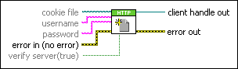

OpenHandle VI
Owning Palette: HTTP Client VIs
Requires: Base Development System
Opens a client handle. Use client handles to wire together multiple HTTP Client VIs while preserving authentication credentials, HTTP headers, and cookies. You can specify a username and password, if necessary, to send Web requests to a server that requires authentication. You also can create a cookie file that stores data across multiple Web requests.

 Add to the block diagram Add to the block diagram |
 Find on the palette Find on the palette |